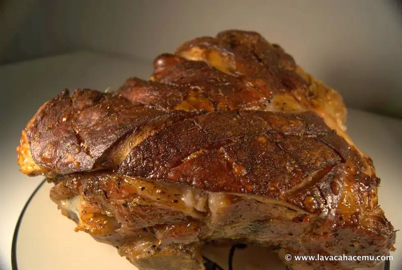

Asado de puerco recetas

{kind=link}
Comparto esta receta para que tal vez la alcances a hacer para año nuevo.. Este fue mi primer intento en varios años de hacer un trozo de puerco, aunque antes solo había hecho lomos que... pues no se parecen mucho a este tipo de corte. Y, debido a que por lo regular los cortes de puerco al horno suelen salir un tanto secos, decidí utilizar una salmuera para mitigar este efecto. Leí varias recetas acerca de como hacer este tipo de trozos, pero no me apeteció usar una olla lenta o asador, y la verdad, no hay como el calor seco y constante de un horno. Además, para una navidad con la esposa no-come-aves... cayó como anillo al dedo.
¿Porqué la salmuera? Pues, porque la sal de la salmuera hace que se saturen las células de la carne con líquido (el de la salmuera) y así, cuando lo cocinas, aunque pierdas la misma cantidad de jugos, se quedan muchos más en la carne evitando que se reseque.
Ahora, la receta...
Ingredientes
- 1 ~4 kg piernil de puerco
Para la salmuera
- 3 litros de agua
- 1/2 tz sal
- 1/3 tz azúcar
- 1 1/2 cta tomillo
- 5 hojas de laurel
- 7 clovos de olir
- 1 1/2 cta semilla de anís
- 1 1/2 cta pimienta negra entera
- 1 1/2 cta semilla de cilantro
- 1/2 cta pimienta gorda molida
Para el aceite de bronceado
- 2 cda aceite de olivo
- 1 cda aceite de maíz
- 1/2 cta sal
- 1 cta tomillo
- 1 cta paprika o pimentón
Procedimiento
- Tuesta la pimienta, clavos, cilantro y anís hasta que queden aromáticos
- Muele ligeramente en un mortero
- Hierve el agua y combina los ingredientes de la salmuera
- Reduce el fuego y deja hervir lentamente por 15 minutos
- Una vez enfriado, coloca el trozo en un contendor lo suficientemente grande y añade la salmuera
- Reposa el trozo por 12 a 18 horas
- Precalienta el horno a 425°F
- Saca el trozo de la salmuera y coloca en una reja que quepa dentro de un refractario para hornear y seca con toallas
- Si el trozo tiene piel, podrías considerar hacerle cortes en diamante para que se vea más bonito y facilitar el corte en la mesa
- Pinta con el aceite de bronceado para una capa uniforme
- Coloca el trozo en el horno por 15 a 20 minutos para que se selle
- Reduce la temperatura a 350°F y hornea por otras 4 horas, o si tienes una de esas cosas modernas que llaman termómetro, hasta que la temperatura interna llegue a 150~155°F
- Saca del horno y deja reposar al menos 20 minutos para que no pierdas esos jugos que tanto batallaste para que se quedaran en la carne. Además, si lo cortas ahora, es probable que hagas explotar una burbuja de manteca hirviendo.... créeme, no es tan agradable como suena.
{kind=link}